|
Termas de
Agripa
| Agripa las construyó en el 25 a.e.c. son
las primeras termas de Roma en un complejo que también incluía el Panteón
y un lago. A su muerte las donó al pueblo romano para su uso público y
gratuito. El complejo termal quedó prácticamente destruido durante el incendio del
año 80.
El foso situado detrás del Panteón y los perfiles circulares de ladrillo
que se ven desde la Via dell’Arco della Ciambella estaban pegados a los
baños de Agripa. Esto nos da una idea de su tamaño teniendo en cuenta que
fueron proyectados para el uso y disfrute de Agripa.
En tiempos del emperador Adriano se realizaron diversas reformas internas.
A partir siglo VII se utilizaron como cantera. Hoy en día la zona se
encuentra altamente urbanizada y los restos que se conservan son muy escasos. |
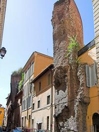 |
Termas de Caracalla
Su construcción se inicio en el 212 bajo el
mandato del Emperador Séptimo Severo y se terminó en el 216 bajo el
mandato del Emperador Caracalla. El recinto exterior fue añadido por
Heliogábalo y Alejandro Severo. En su interior se podían alojar 1.600
bañistas. El recinto exterior media 400x328m. Su planta cuadrada abarcaba
110.500m2. Permanecieron en uso hasta el siglo VI, en que los invasores
bárbaros destruyeron los acueductos que la proveían de agua. También
albergaba dos gimnasios, puestos de comida, y dos bibliotecas, jardines,
etc. Para el suministro de agua, se desvió un ramal del Aqua Marcia.
|
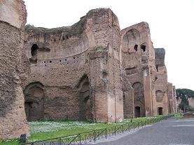 |
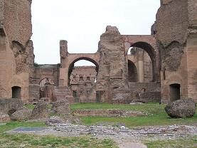 |
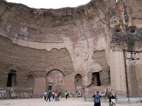 |
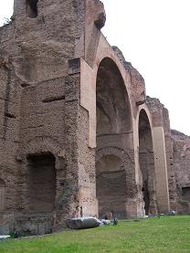 |
Los hombres acudían por las mañanas, las mujeres por las tardes y los
esclavos a última hora.
Se conservan grandes fragmentos de mosaicos y varias de las gigantescas
bañeras de mármol, esculpidas en un solo bloque, se trasladaron al centro
de Roma para ser usadas como fuentes.
Su escultura más famosa, el grupo llamado "Toro Farnesio", se conserva en
el Museo Arqueológico de Nápoles.
Las ruinas sirven de fondo para la temporada de Ópera del Teatro
dell'Opera di Roma cada verano.
Termas de
Diocleciano
|
Situadas entre las actuales Piazza del
Cinquecento y Piazza della Repubblica, Junto a la Estación de Termini.
Las Termas de Diocleciano fueron el
mayor complejo termal de la antigua Roma. Destacan por su
excepcional estado de conservación. Se construyeron entre el 298 y
el 306, y se extendían sobre una superficie de 13 hectáreas. El
complejo podía albergar hasta 3000 personas simultáneamente y estaba
estructurado según la disposición habitual.
Actualmente forman parte del Museo Nacional de Arte Romano.
La construcción de las Termas fue emprendida por el emperador
Maximiano, quien las dedicó a Diocleciano, con quien compartía el
mando del imperio
Las instalaciones permanecieron en funcionamiento hasta el año 537,
cuando la invasión de los Godos causaron graves daños a la ciudad y
sus acueductos, interrumpiendo el suministro de agua. Tras
aproximadamente mil años de abandono, en 1561 el Papa Pío IV designó
las antiguas Termas para la construcción de una iglesia y una
cartuja , confiando el proyecto a Miguel Ángel . La iglesia estaba
dedicada a Nuestra Señora de los Ángeles y los Mártires Cristianos,
Miguel Ángel diseñó la iglesia, transformando el tepidarium, el
frigidarium y parte de la natatio, mientras que las estancias de la
Cartuja, ocupaban la parte norte del complejo termal. A partir de
1575, bajo Gregorio XIII, los espacios de las Termas se
transformaron en graneros para el abastecimiento papal y en
almacenamiento de aceite. La iglesia de San Bernardo alle Terme fue
construida dentro de una de las dos salas circulares de las termas. |
| |
|
|
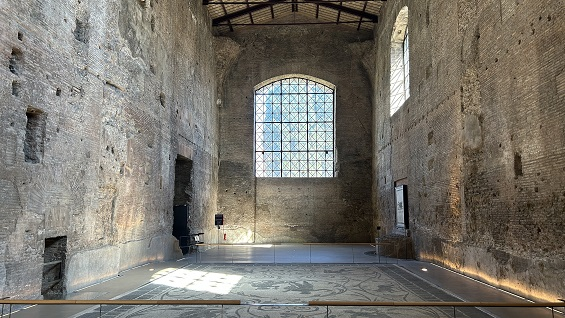 |
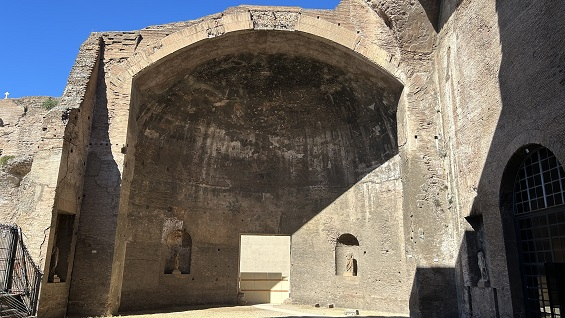 |
|
Termas de Nerón
Las Termas de Nerón fueron construidas
durante el reinado de Nerón, y reedificadas a en época del emperador
Alejandro Severo, lo que provocó que fueran rebautizadas como Thermae
Alexandrinae.
Dichos baños ocupaban una superficie aproximada de 300 x 120 metros,
situándose a 50 metros al oeste del Panteón de Agripa. Actualmente solo
son visibles algunos vestigios aislados, pero se sabe que diversos
palacios e iglesias como el Palazzo Madama y San Luigi dei Francesi
emplearon muros romanos de las termas a la hora de ser construidos.
Termas de Tito
Estaban ubicadas al pie del Monte Palatino,
en donde se encontraba el palacio del emperador construido por Augusto.
Las termas tenían capacidad para recibir a 1.600 personas.
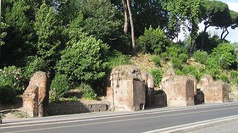
Termas de
Trajano
Las Termas de Trajano se
inauguraron en el 109. Spa: salus per aquam.
Se construyeron sobre las ruinas de la Domus Aurea. La construcción a
cargo Apollodoro de Damasco, duró cinco años. La Natatio era una especie
de mar urbano que se abría en el centro de Roma. La piscina más grande
del imperio.
Los restos arqueológicos se pueden visitar en el parque del colle Oppio.
Por ejemplo, las «siete salas», una enorme cisterna de agua. Podían
almacenar más de 8 millones de litros de agua.
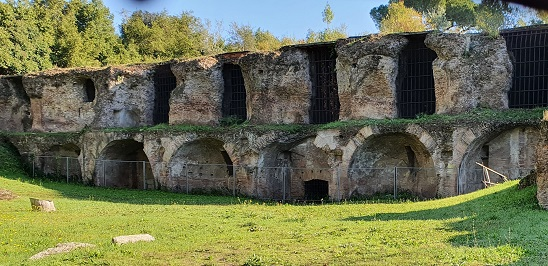
|
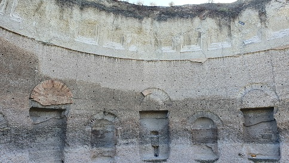 |
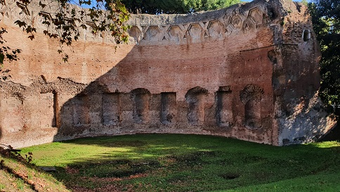 |
|